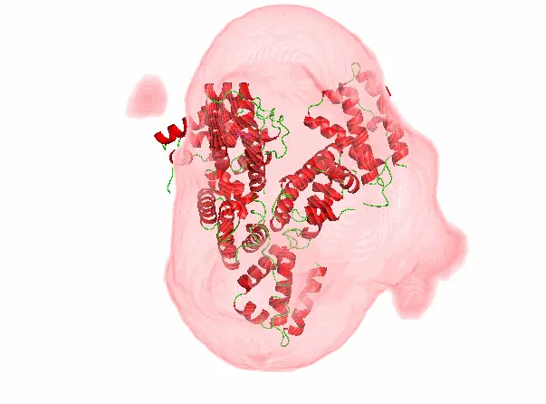
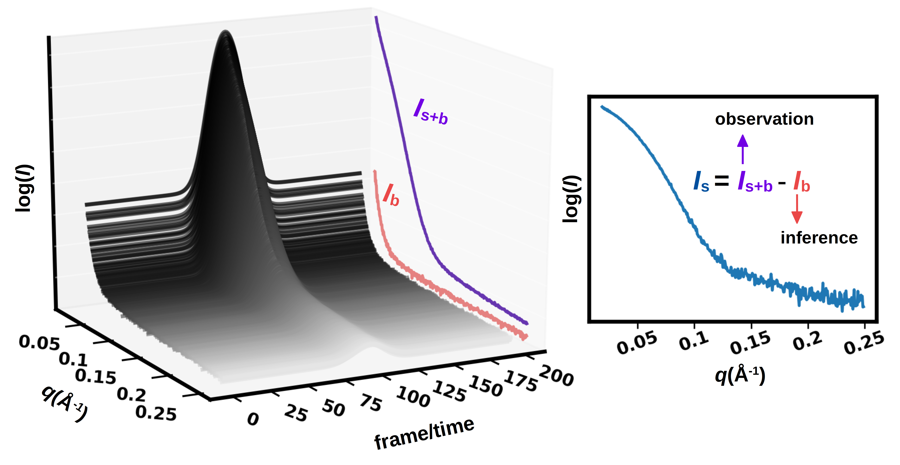
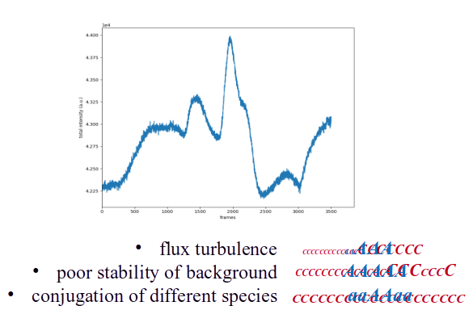
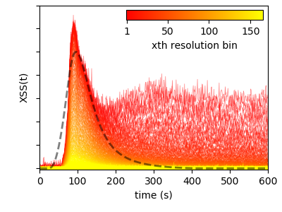
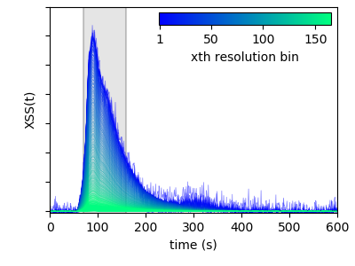

TL;DR: Polluted noisy time series can be rescued by a fidelity estimator (correctness-state score) without making subjective decision
Result Showcasing:

Result with Bad DataResult with Good Data
Information Extraction is Hard because Subjectivite Decision
The solution SAXS pattern of a molecule is inherently ambiguous due
to its isotropic nature. Although several general parameters can be obtained through rigorous analytical
interpretation of SAXS data, the correctness of the interpretation is largely affected by the basic data characteristics, such as accuracy of the background subtraction,
evaluation of the structure factor (i.e polydispersity and intermolecular interactions),
assessment of the meaningful data range, and estimation of the appearance of radiation
damage. Because the SAXS profile lacks correlated measured outputs, it is
hard to statistically provide an objective assessment of these crucial data qualities. A common
situation for the SAXS user is that data interpretation can only be performed in an ill-posed
manner, meaning the solution is not unique or the solution procedure is unstable. Consequently, the
assessment of data quality is in fact a measurement of solution stability. Unfortunately, the stability criteria themselves also include subjective judgement, since many solutions lack an objective standard, and there is no clear dividing line between "many" and "too many".
In modern synchrotron bio-SAXS experiments in-line chromatography has been introduced
to separate the often complex mixtures that occur in these samples, for example, the mixture
of protein-detergent complexes, oligomers and empty micelles/vesicles that occur even in
well behaved membrane protein samples. By separating any potential contaminants and
different components of mixtures (conformational or compositional) using a chromatographic
column, chromatography-SAXS facilitates ideality and weak mono-dispersion of the
biological particles under study. When sample is delivered through a SEC coumn, it is called SEC-SAXS.

Dataset from SEC-SAXS are 2D time series (technically 3D, but azimuthal integration can be used to reduce the dimensionality). The sample is delivered to the X-ray beam using an HPLC system, and when the sample reaches the beam, the response appears at a predefined Shannon channel (or wave vector bin). Under ideal conditions, the time series at all Shannon channels resemble Gaussian distributions. Given the observed signal (Is+b), the background (Ib) can be easily inferred.
The Harsh Reality
However, in reality, ideal conditions do not exist. In actual experiments, various issues arise. For example, flux turbulence can cause sudden changes in total signal. HPLC stability may be poor, alternating between fast and slow pumping. Additionally, overlapping species can complicate the analysis.

This is the actual dataset. I don't even know where the protein peak is. Image the protein signal is a series of A and the background is a series of C. Many factors can affect the accurate evaluation of A series and C series.
A Solution: Use Conjugate Prior experimentally determined
The chromatographic signal is normally a measurement of a certain molecular property, such as refractive index, light scattering, or UV absorption. The SAXS elution trace is a measurement of the total X-ray scattering of the sample and its surrounding environment (buffer, sample capillary). It is important to realize that the chromatographic signal and the SAXS signal are essentially two correlated time series. The chromatographic signal and the SAXS trace in the same experiment both respond to the sample concentration and are hence correlated. As long as the weak monodispersity and non-interaction assumptions hold, the resulting background-corrected time series of the SAXS intensity at each Shannon channel is semantically similar to the chromatographic signal. This can be used as a conjugate prior to help objectively remove Ib from the SAXS time series.
The figure shows the configuration of the SEC-UV-SAXS system and the corresponding data. Here the UV absorbance at 280nm serves as a robust reference time series because UV light is much less intrusive to proteins than X-ray. UV absorbance is proportional to the protein molar concentration. In solution SAXS, the signal from protein alone (Is) is also propotional to the protein molar concentration under dilute solution condition condition.
Some Machine Learning Tricks
After constructing the fidelity estimator correctness-state score (CSS), a similarity and metric learning approach is used to maximize the similarity between the reference signal and the SAXS signal in each Shannon channel.
The top row shows the results obtained using the machine learning approach. The scattering signals in the region of interest are kept stable across all Shannon channels. The quality of the manifested time series remains above the baseline. The bottom two rows show the results using the traditional buffer background correction approach.

Standard "Badly" Corrected Data

Predicted Optimally Corrected Data
The example presented here demonstrates that the optimized correction successfully account for the
radiation-induced changes. The 2D time series of the optimal correction shows a significant improvement
against the standard correction. The post-processed SAXS profile obtained using
this optimized correction results in the "good" electron density distribution model shown at the beginning.
Tech Stacks
Machine Learning Frameworks:
Scikit-learn & Optuna: For training and parameter optimization.
Programming & Data Handling:
Python: Core language with datadistance (python wrapper)
Data Processing: Pyfai for pattern data integration. Structured vector data format designed to utilize Numpy vectorized computing.
Graphic Interface
GUI made with PyQt. Real-time plot update with FigureCavas.
Technical Highlights
Robust Data Quality Enhancement
Developed a novel metric (CSS) and a self-adaptive background correction method that objectively evaluate and improve the quality of noisy, time-series data.
Algorithm Development & Optimization
Demonstrated expertise in creating iterative algorithms, leveraging techniques such as derivative warping distance and cost analysis to refine data processing.
Advanced Statistical & Error Analysis
Applied statistical error estimation and robust validation methods on both synthetic and real-world datasets to ensure reliable outcomes.
Versatile Data Processing
Showcased the ability to handle complex, noisy time series with scalable, automated solutions, reflecting a strong proficiency in developing and implementing customized data pipelines.
Problem-Solving & Innovation
Combined technical rigor with innovative algorithm design to overcome challenges in data fidelity, highlighting strong analytical and programming skills applicable across data-intensive environments.
Explore the Project
For more details about the project, check out the CSS.
This project not only provides a robust, objective metric for assessing SAXS data quality but also enhances data processing via machine learning. These innovations lead to more reliable structural interpretations and a reduction in subjective decision-making during SAXS data analysis.